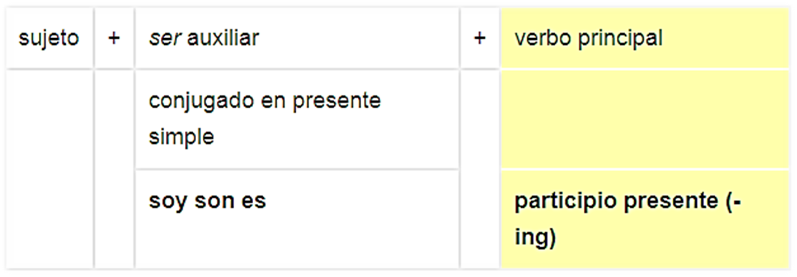

CÓMO UTILIZARLO?
Present Continuous
(also called Present Progressive)
Presente continuo
(también llamado Presente Progresivo)
A menudo utilizamos el tiempo presente continuo en inglés. Es muy diferente del presente simple , tanto en estructura como en uso.
¿Cómo hacemos el presente continuo?
La estructura del tiempo Presente Continuo es:
